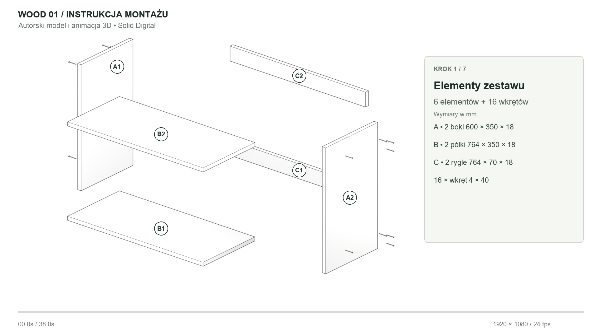
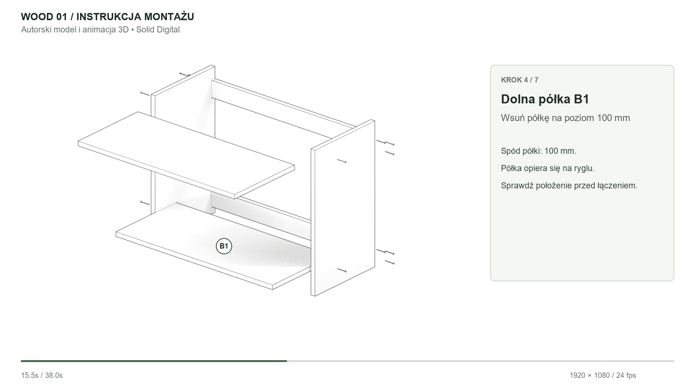
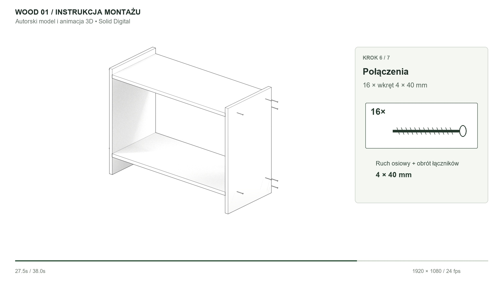
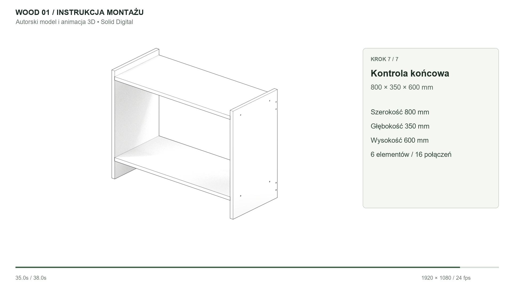

SOLID DIGITAL / AUTORSKA PRÓBKA 3D
Montaż pokazany
krok po kroku.
Techniczna animacja własnego regału: od rozłożonych elementów, przez ustawienie boków, rygli i półek, po osadzenie 16 wkrętów. Monochromatyczne krawędzie, stała kamera i krótkie podpisy utrzymują czytelny przebieg instrukcji.
38 sekund1920 × 108024 kl./sNatywny Blender 5.2.2
Pobierz film MP4
Rzeczywista geometria. Rzeczywisty ruch.
Sześć wymiarowych paneli zmienia pozycję w scenie 3D. Łączniki przemieszczają się osiowo i obracają, a końcowy model zachowuje wymiary 800 × 350 × 600 mm. Oznaczenia A/B/C, ilości i schemat wkręta prowadzą przez siedem etapów. Napisy i panel kroków są dodane w edytowalnym skrypcie eksportu.

01 / Identyfikacja sześciu elementów i 16 łączników.
04 / Wsuwanie dolnej półki na docelowy poziom.
06 / Osadzanie łączników i schemat 4 × 40 mm.
07 / Kontrola końcowych wymiarów regału.Źródła i sprawdzenie
Pakiet zawiera scenę animacji .blend, własny model bazowy, MP4, kadry, skrypty oraz raport weryfikacji. Scena została ponownie otwarta i wyrenderowana. Sprawdzono pozycje paneli na wszystkich 912 klatkach: bez przenikania płyt, ze zgodnością końcowej geometrii i stałą kamerą.
Pobierz film i natywne źródła ZIPScena animacji .blend · Raport geometrii i ponownego renderu